USSR · Tier X
All nations and tiers · EU v20410 → RU v14600ru · 3 November 2026
IS-4 · Tier X
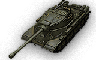
Firepower
Ammo capacity EU 40 RU 30
Potential damage EU 17 600 RU 13 200
Mobility
Forward speed on hard terrain (km/h) EU 43 RU 41.34
Forward speed on medium terrain (km/h) EU 33.24 RU 31.01
Forward speed on soft terrain (km/h) EU 19.70 RU 18.37
Engine power (hp) EU 850 RU 792.96
Power/weight (hp/t) EU 13.97 RU 13.04
Tank traverse on hard terrain (°/s) EU 31.29 RU 30.87
Tank traverse on medium terrain (°/s) EU 23.47 RU 23.16
Tank traverse on soft terrain (°/s) EU 13.91 RU 13.72
IS-7 · Tier X
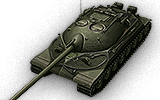
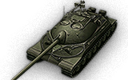
Penetration (mm)
EU  AP 250 / APCR 310 /
AP 250 / APCR 310 /  HE 68 → RU
HE 68 → RU  AP 250 / APCR 316 /
AP 250 / APCR 316 /  HE 68
HE 68
Damage (HP)
EU  AP 490 / APCR 490 /
AP 490 / APCR 490 /  HE 640 → RU
HE 640 → RU  AP 530 / APCR 530 /
AP 530 / APCR 530 /  HE 670
HE 670
Firepower
DPM (HP/min) EU 2 238.26  RU 2 420.98
RU 2 420.98
Potential damage EU 14 700 RU 15 900
K-91 · Tier X
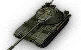
Firepower
DPM (HP/min) EU 3 513.26 RU 3 178.67
Rate of fire (rounds/min) EU 10.98 RU 9.93
Reload time (s) EU 5.47 RU 6.04
Gun handling
Dispersion (m/100 m) EU 0.32 RU 0.29
Dispersion · damaged EU 0.63 RU 0.58
Dispersion · moving EU 0.14 RU 0.10
Object 140 · Tier X
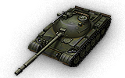
Damage (HP)
EU  APCR 340 /
APCR 340 /  HEAT 340 /
HEAT 340 /  HE 420 → RU
HE 420 → RU  APCR 320 /
APCR 320 /  HEAT 320 /
HEAT 320 /  HE 420
HE 420
Firepower
DPM (HP/min) EU 3 377.33 RU 3 034.18
Rate of fire (rounds/min) EU 9.93 RU 9.48
Reload time (s) EU 6.04 RU 6.33
Potential damage EU 17 000 RU 16 000
Gun handling
Aim time (s) EU 1.82 RU 2.01
Mobility
Forward speed on soft terrain (km/h) EU 49.34 RU 55
Engine power (hp) EU 700 RU 720
Power/weight (hp/t) EU 19.44 RU 20
Terrain resist (hard) EU 0.53 RU 0.17
Terrain resist (med) EU 0.62 RU 0.50
Terrain resist (soft) EU 1.44 RU 0.96
Tank traverse on medium terrain (°/s) EU 45.27 RU 18.05
Tank traverse on soft terrain (°/s) EU 19.62 RU 9.46
Armor & health
Hull armor · front (mm) EU 110 RU 120
Turret armor · front (mm) EU 275 RU 240
Health EU 1 950 RU 2 050
Object 261 · Tier X
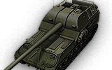
Penetration (mm)
EU  HE 45 /
HE 45 /  HE 56 /
HE 56 /  AP 334 → RU
AP 334 → RU  HE 45 /
HE 45 /  AP 334
AP 334
Damage (HP)
EU  HE 800 /
HE 800 /  HE 1000 /
HE 1000 /  AP 520 → RU
AP 520 → RU  HE 1100 /
HE 1100 /  AP 600
AP 600
Firepower
DPM (HP/min) EU 1 564.50 RU 2 024.65
Rate of fire (rounds/min) EU 1.96 RU 1.84
Reload time (s) EU 30.68 RU 32.60
Explosion radius EU 9.50 RU 7.50
Stun duration · maximum (s) EU 29 → RU —
Stun duration · minimum (s) EU 11.60 → RU —
Ammo capacity EU 20 RU 28
Potential damage EU 16 000 RU 30 800
Armor & health
Health · ammo rack EU 250 RU 130
Miscellaneous
Shell cost EU 1 980 RU 2 260
Object 268 · Tier X
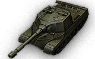
Gun handling
Aim time (s) EU 2.40 RU 2.59
Dispersion · moving EU 0.18 RU 0.21
Dispersion · tank traverse EU 0.18 RU 0.21
Depression (°) EU 6 RU 5
Mobility
Forward speed on soft terrain (km/h) EU 35.47 RU 31.58
Engine power (hp) EU 950 RU 845.82
Power/weight (hp/t) EU 18.64 RU 16.59
Tank traverse (°/s) EU 34.42 RU 29.20
Tank traverse on hard terrain (°/s) EU 32.70 RU 27.74
Tank traverse on medium terrain (°/s) EU 27.67 RU 23.48
Tank traverse on soft terrain (°/s) EU 17.98 RU 15.26
Armor & health
Health · engine EU 345 RU 360
Track repair time (s) EU 11.79 RU 12.03
Object 268 Version V · Tier X
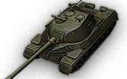
Damage (HP)
EU  AP 750 /
AP 750 /  HEAT 750 /
HEAT 750 /  HE 1100 → RU
HE 1100 → RU  AP 650 /
AP 650 /  HEAT 650 /
HEAT 650 /  HE 840
HE 840
Firepower
DPM (HP/min) EU 2 394.64 RU 2 510.93
Rate of fire (rounds/min) EU 3.19 RU 3.86
Reload time (s) EU 18.79 RU 15.53
Shell velocity (m/s) EU 950 RU 1 050
Ammo capacity EU 30 RU 36
Potential damage EU 22 500 RU 23 400
Gun handling
Aim time (s) EU 2.88 RU 2.01
Dispersion (m/100 m) EU 0.35 RU 0.31
Dispersion · damaged EU 0.69 RU 0.61
Dispersion · moving EU 0.22 RU 0.18
Dispersion · tank traverse EU 0.22 RU 0.18
Dispersion · turret traverse EU 0.20 RU 0.10
Miscellaneous
View range (m) EU 360 RU 380
Object 430U · Tier X
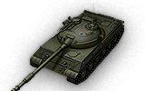
Gun handling
Dispersion · moving EU 0.15 RU 0.16
Dispersion · tank traverse EU 0.15 RU 0.16
Dispersion · turret traverse EU 0.10 RU 0.12
Mobility
Forward speed on soft terrain (km/h) EU 41.91 RU 35.11
Engine power (hp) EU 740 RU 620
Power/weight (hp/t) EU 17.62 RU 14.76
Armor & health
Hull armor · front (mm) EU 170 RU 160
Health EU 2 050 RU 2 000
Object 452K · Tier X
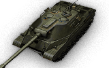
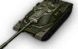
Penetration (mm)
EU  AP 260 /
AP 260 /  HEAT 320 /
HEAT 320 /  HE 65 → RU
HE 65 → RU  AP 265 /
AP 265 /  HEAT 330 /
HEAT 330 /  HE 65
HE 65
Damage (HP)
EU  AP 560 /
AP 560 /  HEAT 560 /
HEAT 560 /  HE 700 → RU
HE 700 → RU  AP 530 /
AP 530 /  HEAT 530 /
HEAT 530 /  HE 670
HE 670
Firepower
DPM (HP/min) EU 2 503.20 RU 2 600.82
Rate of fire (rounds/min) EU 4.47 RU 4.91
Reload time (s) EU 13.42 RU 30.68
Shell velocity (m/s) EU 1 000 RU 1 030
Ammo capacity EU 30 RU 36
Potential damage EU 16 800 RU 19 080
Clip size EU — → RU 3
Clip damage · damage EU — → RU 1 590
Clip damage · time (s) EU — → RU 6
Intra-clip reload EU — → RU 3
Gun handling
Aim time (s) EU 2.40 RU 2.59
Dispersion (m/100 m) EU 0.36 RU 0.40
Dispersion · damaged EU 0.73 RU 0.81
Dispersion · moving EU 0.18 RU 0.24
Dispersion · tank traverse EU 0.18 RU 0.24
Dispersion · turret traverse EU 0.08 RU 0.12
Dispersion · firing EU 4 RU 5
Mobility
Forward speed (km/h) EU 40 RU 45
Forward speed on hard terrain (km/h) EU 40 RU 41.52
Forward speed on medium terrain (km/h) EU 35.82 RU 31.75
Forward speed on soft terrain (km/h) EU 24.36 RU 21.59
Reverse speed (km/h) EU 17 RU 18
Engine power (hp) EU 880 RU 780
Power/weight (hp/t) EU 16 RU 14.18
Turret traverse (°/s) EU 26.08 RU 29.20
Armor & health
Hull armor · front (mm) EU 210 RU 160
Hull armor · side (mm) EU 100 RU 70
Turret armor · front (mm) EU 130 RU 140
Turret armor · side (mm) EU 130 RU 100
Health EU 2 400 RU 2 300
Health · ammo rack EU 210 RU 260
Miscellaneous
Stationary camo · after firing EU 1.23 RU 1.45
Moving camo · after firing EU 0.62 RU 0.73
Object 780 · Tier X
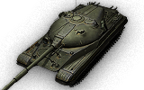
Firepower
DPM (HP/min) EU 2 369.10 RU 2 320.26
Rate of fire (rounds/min) EU 4.47 RU 4.38
Reload time (s) EU 13.42 RU 13.71
ST-62 Version 2 · Tier X
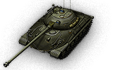
Penetration (mm)
EU  APCR 260 /
APCR 260 /  HEAT 330 /
HEAT 330 /  HE 50 → RU
HE 50 → RU  APCR 264 /
APCR 264 /  HEAT 330 /
HEAT 330 /  HE 50
HE 50
Damage (HP)
EU  APCR 320 /
APCR 320 /  HEAT 320 /
HEAT 320 /  HE 420 → RU
HE 420 → RU  APCR 360 /
APCR 360 /  HEAT 360 /
HEAT 360 /  HE 440
HE 440
Firepower
DPM (HP/min) EU 2 503.20 RU 3 086.14
Rate of fire (rounds/min) EU 7.82 RU 8.57
Reload time (s) EU 7.67 RU 7
Clip size EU 3 → RU —
Clip damage · damage EU 960 → RU —
Clip damage · time (s) EU 4 → RU —
Intra-clip reload EU 2 → RU —
Shell velocity (m/s) EU 1 320 RU 1 223
Ammo capacity EU 50 RU 65
Potential damage EU 16 000 RU 23 400
Gun handling
Dispersion · damaged EU 0.71 RU 0.69
Dispersion · moving EU 0.14 RU 0.08
Dispersion · tank traverse EU 0.14 RU 0.08
Dispersion · turret traverse EU 0.10 RU 0.08
Dispersion · firing EU 3 RU 4
Mobility
Forward speed (km/h) EU 50 RU 65
Forward speed on hard terrain (km/h) EU 50 RU 65
Forward speed on medium terrain (km/h) EU 50 RU 65
Forward speed on soft terrain (km/h) EU 43.82 RU 37.53
Reverse speed (km/h) EU 20 RU 25
Engine power (hp) EU 700 RU 600
Weight (kg) EU 38 000 → RU 38 025
Power/weight (hp/t) EU 18.42 RU 15.78
Turret traverse (°/s) EU 52.15 RU 56.32
Tank traverse (°/s) EU 57.36 RU 62.58
Tank traverse on hard terrain (°/s) EU 57.36 RU 62.58
Tank traverse on medium terrain (°/s) EU 49.17 RU 53.64
Tank traverse on soft terrain (°/s) EU 21.51 RU 23.47
Armor & health
Hull armor · front (mm) EU 100 RU 120
Hull armor · side (mm) EU 75 RU 90
Hull armor · rear (mm) EU 40 RU 50
Turret armor · front (mm) EU 290 RU 230
Turret armor · side (mm) EU 150 RU 120
Turret armor · rear (mm) EU 50 RU 100
Miscellaneous
Stationary camo · after firing EU 3.27 RU 3.45
Moving camo · after firing EU 2.45 RU 2.59
View range (m) EU 390 RU 400
Fire chance (%) EU 10 RU 12
Shell cost EU 1 100 RU 1 150
ST-II · Tier X
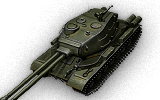
Penetration (mm)
EU  AP 258 /
AP 258 /  HEAT 310 /
HEAT 310 /  HE 68 → RU
HE 68 → RU  AP 258 /
AP 258 /  HEAT 320 /
HEAT 320 /  HE 68
HE 68
Firepower
DPM (HP/min) EU 2 458.50 RU 2 353.44
Rate of fire (rounds/min) EU 5.59 RU 5.35
Reload time (s) EU 10.74 RU 11.22
Mobility
Forward speed on hard terrain (km/h) EU 38.44 RU 40
Forward speed on medium terrain (km/h) EU 28.83 RU 40
Forward speed on soft terrain (km/h) EU 17.09 RU 25.20
Reverse speed (km/h) EU 13 RU 15
Terrain resist (hard) EU 1.15 RU 0.67
Terrain resist (med) EU 1.53 RU 1.06
Terrain resist (soft) EU 2.59 RU 1.75
Turret traverse (°/s) EU 23.99 RU 27.12
Tank traverse on medium terrain (°/s) EU 20.34 RU 17.28
Tank traverse on soft terrain (°/s) EU 12.05 RU 10.42
Armor & health
Hull armor · front (mm) EU 150 RU 160
Turret armor · front (mm) EU 325 RU 300
Alternate mode
EU stats · RU statsFirepower
DPM (HP/min) EU 2 458.50 RU 2 353.44
Rate of fire (rounds/min) EU 5.59 RU 5.35
Reload time (s) EU 10.74 RU 11.22
Mobility
Forward speed on hard terrain (km/h) EU 38.44 RU 40
Forward speed on medium terrain (km/h) EU 28.83 RU 40
Forward speed on soft terrain (km/h) EU 17.09 RU 25.20
Reverse speed (km/h) EU 13 RU 15
Terrain resist (hard) EU 1.15 RU 0.67
Terrain resist (med) EU 1.53 RU 1.06
Terrain resist (soft) EU 2.59 RU 1.75
Turret traverse (°/s) EU 23.99 RU 27.12
Tank traverse on medium terrain (°/s) EU 20.34 RU 17.28
Tank traverse on soft terrain (°/s) EU 12.05 RU 10.42
Armor & health
Hull armor · front (mm) EU 150 RU 160
Turret armor · front (mm) EU 325 RU 300
T-100 LT · Tier X
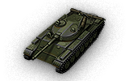
Firepower
DPM (HP/min) EU 2 503.20 RU 2 357.31
Rate of fire (rounds/min) EU 8.34 RU 7.86
Reload time (s) EU 7.19 RU 7.64
Gun handling
Dispersion (m/100 m) EU 0.38 RU 0.44
Dispersion · damaged EU 0.77 RU 0.88
Mobility
Forward speed (km/h) EU 75 RU 72
Forward speed on hard terrain (km/h) EU 75 RU 72
Forward speed on medium terrain (km/h) EU 75 RU 72
Forward speed on soft terrain (km/h) EU 75 RU 72
Reverse speed (km/h) EU 30 RU 25
Terrain resist (hard) EU 0.96 RU 1.20
Terrain resist (med) EU 1.25 RU 1.56
Terrain resist (soft) EU 1.82 RU 2.28
Tank traverse (°/s) EU 56.32 RU 58.41
Tank traverse on hard terrain (°/s) EU 53.51 RU 55.49
Tank traverse on medium terrain (°/s) EU 41.16 RU 42.68
Tank traverse on soft terrain (°/s) EU 28.16 RU 29.20
Armor & health
Health EU 1 700 RU 1 500
Miscellaneous
View range (m) EU 400 RU 390
T-62A · Tier X
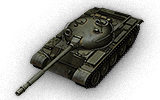
Damage (HP)
EU  APCR 320 /
APCR 320 /  HEAT 320 /
HEAT 320 /  HE 420 → RU
HE 420 → RU  APCR 360 /
APCR 360 /  HEAT 360 /
HEAT 360 /  HE 440
HE 440
Firepower
DPM (HP/min) EU 3 034.18 RU 3 213.81
Rate of fire (rounds/min) EU 9.48 RU 8.93
Reload time (s) EU 6.33 RU 6.72
Potential damage EU 16 000 RU 18 000
Gun handling
Dispersion (m/100 m) EU 0.33 RU 0.31
Dispersion · damaged EU 0.65 RU 0.61
Mobility
Forward speed (km/h) EU 50 RU 57
Forward speed on hard terrain (km/h) EU 50 RU 57
Forward speed on medium terrain (km/h) EU 50 RU 57
Forward speed on soft terrain (km/h) EU 45.06 RU 55.10
Engine power (hp) EU 613.22 RU 750
Power/weight (hp/t) EU 16.57 RU 20.27
Miscellaneous
Stationary camo EU 15.28 RU 17.95
Stationary camo · after firing EU 3.02 RU 3.56
Moving camo EU 11.46 RU 13.45
Moving camo · after firing EU 2.27 RU 2.66
Shell cost EU 1 100 RU 1 200